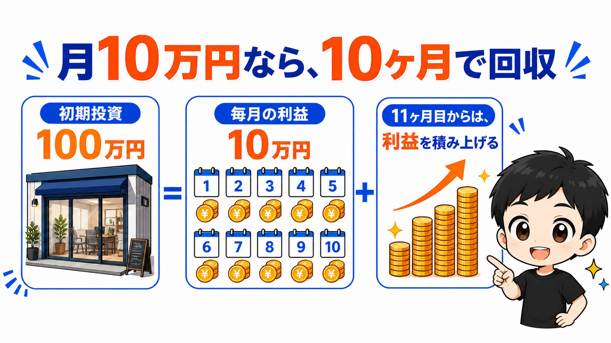
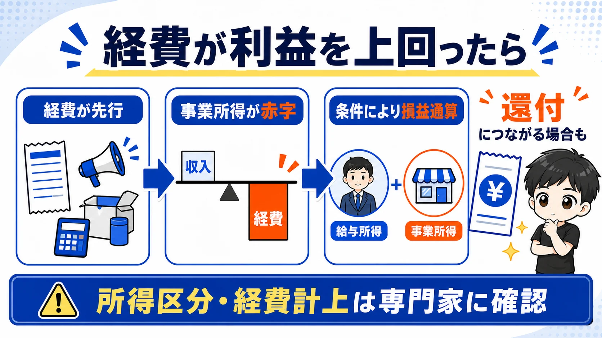
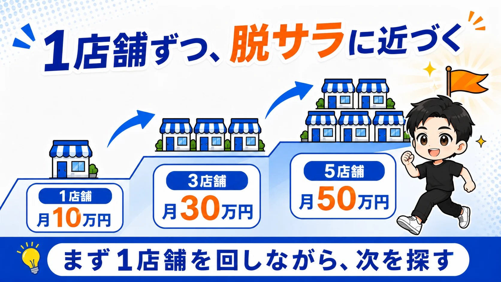
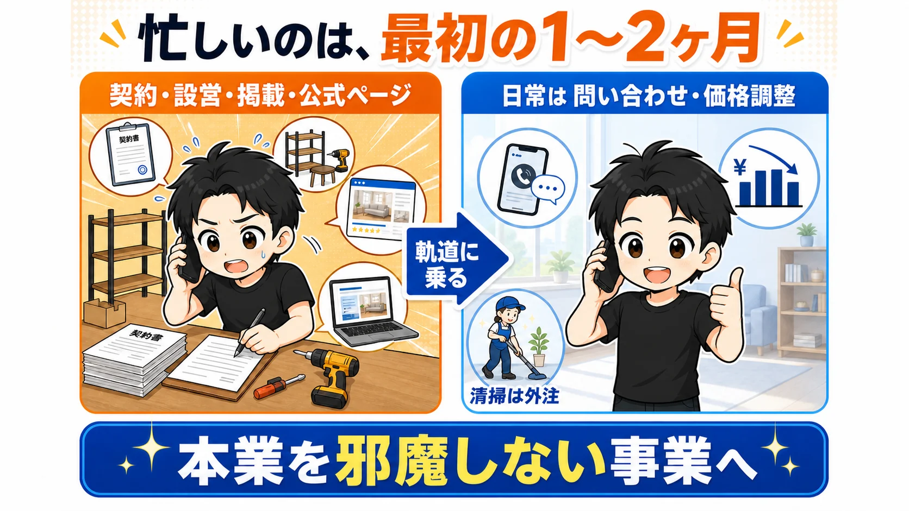
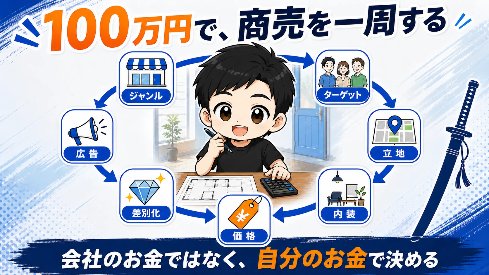
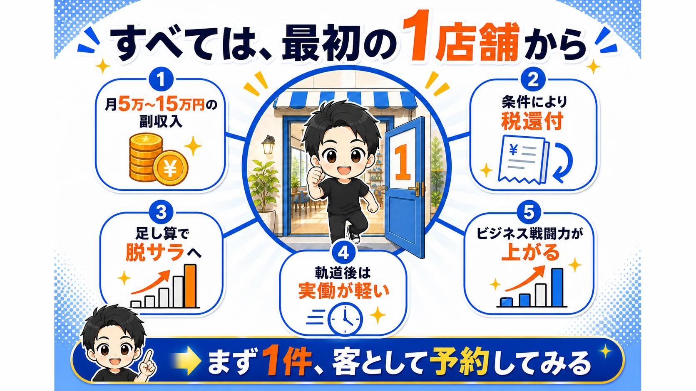

副業でレンタルスペースをおすすめする理由は、収入の柱を増やしながら、店舗数と経験を積み上げられるからです。
私は5年間で23部屋を運営し、累計売上は1.5億円を超えました。赤字物件はゼロです。
私の運営実績では、1店舗あたり月5万〜15万円が利益の目安です。立地・用途・家賃・稼働率によって結果は変わりますが、会社員の給料にもう1本の収入の柱を作れます。
副業選びで迷っている人に、私がレンタルスペースをすすめる理由は5つあります。
月5万〜15万円の副収入を目指せる

まず、いちばんシンプルな理由です。
私の運営実績では、1店舗あたりの利益は月5万〜15万円が目安です。会社員の給料に、もう1本の収入の柱が立ちます。
もちろん、初期投資はかかります。広さにもよりますが、80万〜150万円。ざっくり100万円と見てください。
月10万円の利益が出れば、単純計算では10ヶ月で回収です。回収が終わったら、そこから先の利益を積み上げていきます。
※利益や回収期間は物件ごとに異なり、成果を保証するものではありません。
出店した年は税金が戻ることがある

これは意外と知られていません。
出店した年は、広告費・消耗品費・外注費などの経費が先行し、事業所得が赤字になる場合があります。
ただし、家具・設備・内装費などは、支払った年に全額を経費にできず、資産として計上して減価償却する場合があります。「初期投資100万円だから100万円の赤字」とは限りません。
国税庁は、事業所得などの赤字を他の所得の黒字から控除する「損益通算」を案内しています。条件に該当すれば、給与から源泉徴収された所得税の還付につながる場合があります。
ただし、レンタルスペースの所得が事業所得として認められるかなど、状況によって扱いは変わります。青色申告を利用する場合は、原則として期限内に承認申請が必要です。
制度の詳細は、国税庁の損益通算の案内と青色申告承認申請手続を確認し、個別の判断は税務署や税理士へ相談してください。
店舗数の足し算で脱サラが視野に入る

レンタルスペースは、足し算のゲームです。
1店舗で月10万円なら、3店舗で月30万円、5店舗で月50万円。このあたりで、会社員の手取りを超える人も出てきます。
「会社を辞めたい」という相談をよく受けます。私の答えはいつも同じで、まず1店舗です。
良い物件はポンポン出てくるものではありません。1店舗を回しながら次を探す。これを繰り返すことで、脱サラが現実的な選択肢になります。
軌道に乗れば実働を大きく減らせる

正直に言うと、立ち上げは忙しいです。
物件の契約、内装と設営、ポータルサイトへの掲載、公式ページづくり。最初の1〜2ヶ月は、やることが山ほどあります。
でも、軌道に乗ったあとは別世界です。
日常の業務は、お客さんからの問い合わせ対応と、予約状況を見ながら行う価格・訴求の調整が中心です。清掃は外注します。ここを自分で抱えないことが、本業と両立するポイントです。
手離れのよい事業にできれば、2店舗目を出してもいいし、別の副業を足してもいい。自分の時間を使い続けない収入源を積み上げられます。
店舗ビジネスの戦闘力が上がる

最後は、お金以外の話です。
自分のお金で店を出すのは、会社員ではなかなか得られない経験です。会社のお金で挑戦するのと、身銭を削って挑戦するのは別物です。
どのジャンルで、誰をターゲットに、どの立地で出すか。内装をどうして、価格をいくらにして、競合とどう差をつけるか。広告をどう打って、訴求をどう変えるか。
店舗ビジネスの一周分を、約100万円の実戦で経験できます。この経験は、レンタルスペース以外の事業を立ち上げるときにも効きます。
最初の1店舗からすべてが始まる

5つの理由に共通しているのは、すべて「最初の1店舗」から始まるということです。
- 月5万〜15万円の副収入を目指せる
- 条件に該当すれば税金が戻る場合がある
- 店舗数の足し算で脱サラが視野に入る
- 軌道に乗れば実働を大きく減らせる
- 店舗ビジネスの戦闘力が上がる
2店舗目からは、1店舗目で作った仕組みを再利用できます。でも1店舗目だけは、自分で決めて、自分で出すしかありません。
いま副業を探しているなら、まず気になるレンタルスペースを1件予約して、お客さんとして中を見てください。契約や出店の前に、市場を体感するところから始めます。
次に読むなら、レンタルスペースの始め方・完全ロードマップで開業までの全体像を確認してください。物件候補がある人は、契約前に競合を視察する方法も役立ちます。